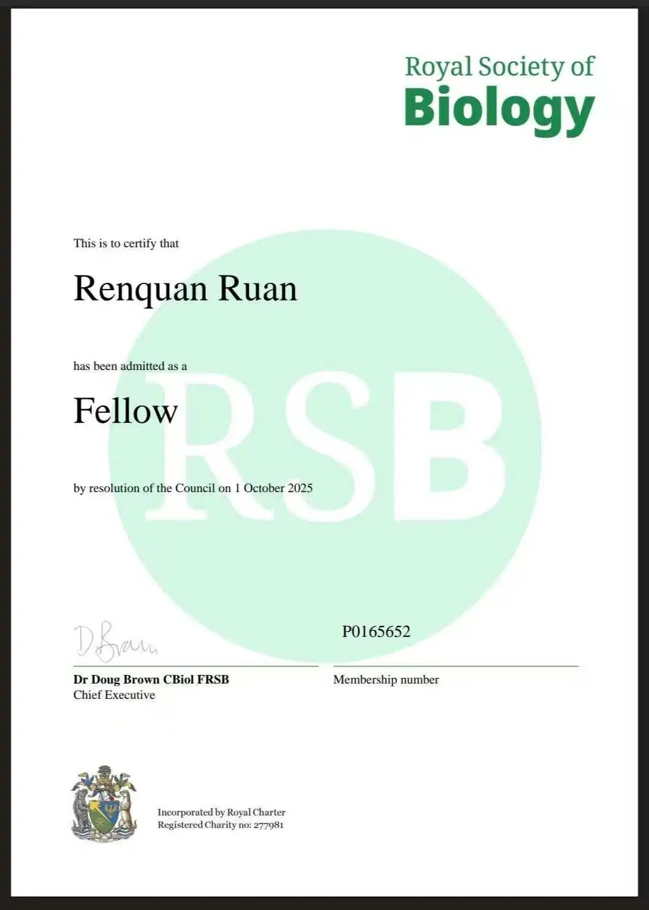
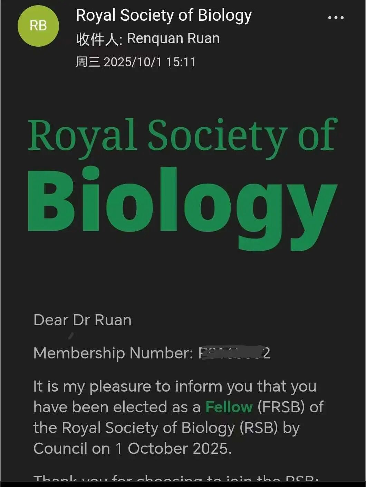
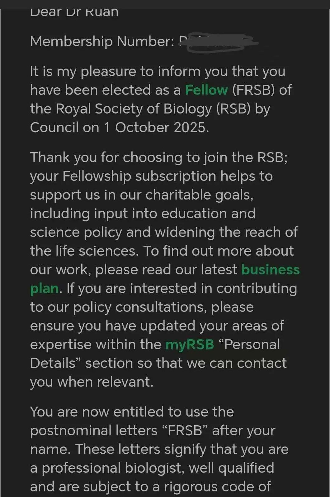
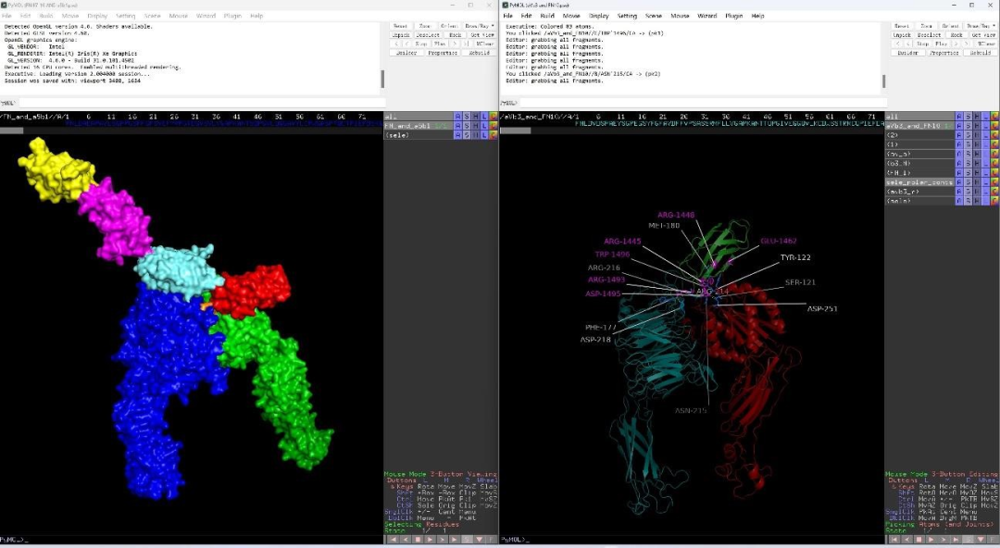
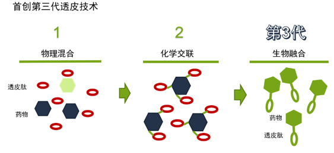
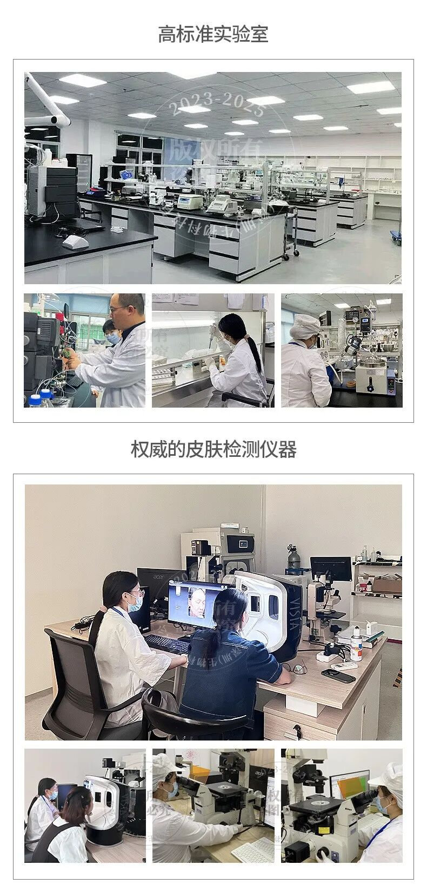
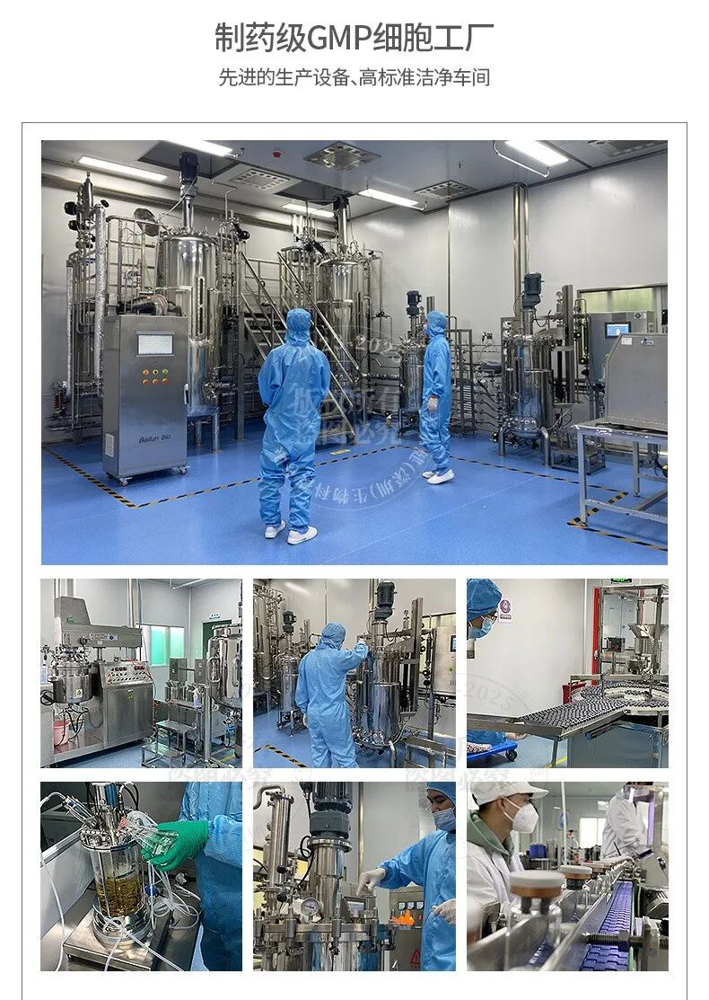

Biotechnology Co., Ltd.")

：China Biological Transdermal Technology coming grade certification can ！recent，from biosubstance scienceassociation （Royal Society of Biology， RSB） coming Good News: ：Mellgen (Shenzhen) Biotechnology Co., Ltd.Founder 、 Dr. Ruan Renquan for biosubstance scienceFellow（Fellow of the Royal Society of Biology， FRSB）。this in BioactivityIngredientshigh via and Synthetic biosubstance scienceIngredients sector aqua platform 。
one 、 ，realize ：Ruan Renquanfull Elected Fellow of the Royal biosubstance scienceFellow（FRSB）
biosubstance scienceassociation （Royal Society of Biology）is full global science biosubstance sciencescience science one ，its association / （FRSB） in Life Scienceand biosubstance process sector science 、 production can Scientistsand Industry 。
2025-10-1，scienceassociation manager association ， Dr. Ruan RenquanFRSB ， in Name “FRSB”science 。this one grade ， is for Dr. Ruan Renquan biosubstance Transdermal and Synthetic biosubstance sciencetwo ten science high ， Chinahigh new TechnologyEnterprise in full global biosubstance Technologyand Efficacy Innovation sector 。

▲ Mellgen BiotechFounder Ruan Renquanfull Elected Fellow of the Royal biosubstance scienceFellow（FRSB）


two 、Dr. Ruan Renquan：from Laboratoryto production
As a ChinaBiological Transdermal Technology and scholar ，Dr. Ruan Renquan sciencescience and production ：
- University of Science and Technology of China (USTC)：biosubstance medical scienceprocess Ph.D.、Ph.D. ， period inmajor moleculesvia and process ；
- majorscience：grade manager（EMBA）， and generation EnterpriseInnovation manager ；
- Biological Transdermal Technology ：Transdermal Cyclic Peptide 、 collagen scholar ， Invention Patents50 items ， in scienceJournal high aqua platform science 20 papers ；
- high times ：Shenzhenhigh times 、 science ， multi-items multi-items grade recombinant major science items 。
Dr. Ruan Renquan is one position realize Scientists， is one position become integrating LaboratoryScientific Achievementsproduction 、 process realize 。 ， Mellgen Biotech“production science medical applied” Integrating Innovation Mode full global Technology 。
、 Technology ：Mellgen Biotech major Technologyplatform units
in Dr. Ruan Renquan ，Mellgen Biotech Innovationcan and production can “production ”，its Core AdvantagesPowered by in major and manufacturingplatform units ：
1. canmolecular designplatform units
Powered by AlphaFold and othersProtein Type and science moleculesfor ， active Peptidesand BiomimeticProtein high virtual ， realizing from “via testing ” “ and ” generation Mode 。

2. Biological Transdermal Technologyplatform units
from generation Transdermal PeptidesIntegrating Technology，can Collagen、Peptidesand and othersactive Ingredientsvia AbsorptionenhanceL10xusing on ， applied become 20x， BreakthroughTechnologybecome in 《Nature Biotechnology》and othersfull global period 。

3. Green becomebiosubstance manufacturingplatform units
CompanyEquipped with 10000+ ㎡ high bioproduction ， secretFermentation 、high grade GMPC productionand secret ， tonsgrade GMP Fermentationand production can ， from ggrade to tonsgrade full industrial chain 。


four 、TechnologyBreakthrough：from “Transdermal Cyclic Peptide” “ substance Transdermal ”
Transdermal “ sciencePenetration Enhancing 、substance manager Penetration Enhancing major 、 Penetration Enhancing Absorption” 。Dr. Ruan Renquan from Transdermal Cyclic Peptide（cycle Transdermal Peptide），Innovation resolve this one grade ：
Transdermal sciencescholar Mark Prausnitz for items Technology high ， its for “biosubstance Technologyand via sector process Innovation”。
、production can ：four major InnovationIngredientsMatrix Technology
major Technology platform units ，Mellgen Biotech become four major InnovationIngredientsMatrix：
- Transdermal Cyclic Peptide （cTDP）： applied Type high biosubstance Penetration Enhancing platform units ， can Efficacy Bio-Activessubstance ；
- Recombinant Protein ：Recombinant III Type Collagen、High PurityTransdermal Fibronectin（FN）；
- source molecules ： Jellyfish Mucin Protein JELFIPRO®、Jellyfish 0 Type Collagenand others high MoisturizingIngredients；
- substance Fermentationactive substance ：Ganoderma Flavonoids、 、Infant Probiotic Fermentation Activesand others。
on Ingredients applied in Cosmetics 、medical Repair Productsand functional in ，genuine “Great Chinese Ingredients, Superior Transdermal Absorption” Corporate Mission。Mellgen Biotechintegrating using Ruan Renquanfull Elected Fellow of the Royal biosubstance scienceFellowfor new ， major science ， full global ， biosubstance Technology coming ！
1. and science ： standing Technologyscience 、science 、 manager and Experiment ， Cosmetics process 、 and science logistics ， As a for scholar Efficacy medical / Recommended: 。
2. become and ：Cosmetics and become manufacturing （such as 《Cosmetics manager 》、《CosmeticsEfficacy 》and others）， for its Productssafetyfull 、 and Efficacy ， become and Efficacy 。
3. production and Content ： standing Content from science ， Author ， science and Technology 。 and Controversies Contact realize ；for in applied ， 。